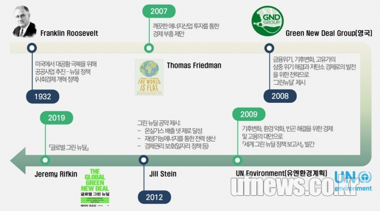
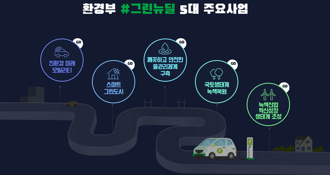

그린뉴딜은 친환경 신재생에너지 산업 인프라를 구축하고 관련 산업을
육성함으로써,
에너지 구조를 전면적으로 조정하여 고용과 노동까지 아우르는 혁신을 가져오자는 아이디어로 요약할 수 있다.
친환경 에너지 산업으로의 이행을 기반으로 경제 전반에 새로운 비전을 제시한다 는 의미다.
먼저 뉴딜은 1930년대 경제 대공황을 극복하기 위해 루스벨트 대통령이 추진했던 정책 모음을 뜻한다. 정부가 적극적으로 나서 도로와 교량 등 사회 기반시설을 건설하고 농업을 지원하며 일자리를 만들었으며, 경제대공황을 성공적으로 극복하는 데 기여한 것으로 평가된다.뉴딜정책의 범위는 매우 넓어서, 예술 분야 투자로 배우, 화가, 작가 등 예술인의 활동을 지원하고 사업주와 노동자가 비용을 분담하는 사회보장제도 역시 핵심 정책으로 추진되어 자리잡았다. 요약하자면, 뉴딜은 위기에 몰린 사람들을 위한 고용과 복지의 틀을 만드는 작업이라고 할 수 있다.
‘그린 뉴딜’이라는 표현이 공식적으로 사용되기 시작한 사례는 2007년 미국에서 발간된 토머스 프리드만의 「그린코드(Code Green)」다. 프리드먼은 정부의 ‘녹색 버전 뉴딜 정책’이 필요하다고 주장했다. 정부 주도로 청정 에너지신산업을 육성해 에너지산업의 지형을 바꾸면 기후변화를 억제할 수 있을 뿐 아니라 화석연료에 기반을 둔 기존 질서를 대신해 새로운 국제질서를 이끌 수 있다는 것이다.
프리드먼의 저술 이후, 2008년 영국에서는 ‘그린뉴딜’ 보고서가 나와 에너지 효율 제고를 위한 정부 투자와 저탄소 인프라 구축을 통한 녹색 일자리 창출 등을 주장했다.미국에서는 오바마 전 대통령이 대선 공약으로 그린뉴딜을 내세웠고 오바마 정부 시기에 신재생에너지에 대한 투자가 적극적으로 이뤄졌다. 같은 시기 UN환경계획에서도 지속가능한 성장계획을 담은 「글로벌 그린뉴딜」보고서를 발간하며 그린뉴딜을 적극적으로 지원하기 시작했다.

2000년대 초반 경제 성장과 녹색을 연계했던 그린뉴딜은 2018년 미국 의원선거를 전후해 민주당의 그린뉴딜 정책을 기점으로 새로운 국면을 맞는다. 2019년 2월 에드워드 마키 상원의원과 최연소 하원의원 오카시오 코르테즈 등 민주당 하원의원 64명과 상원의원 9명이 그린뉴딜 결의안을 제출했다.결의안을 통해 이들은 전기차와 초고속 열차 보급, 100% 재생가능 에너지를 활용한 전력 생산, 스마트 그리드 구축 등을 통해 2030년까지 10년 안에 미국을 탄소 순배출 제로 사회로 전환할 것을 촉구했다. 탄소 제로사회로의 전환을 핵심의제로 그에 따른 에너지 산업 투자를 통한 성장을 논의하게 된 것이다. 여기에는 가족을 부양하기에 충분한 임금을 제공하는 일자리 보장, 양질의 의료보험과 주거 환경, 깨끗한 물과 공기의 제공, 에너지 효율 제고 위한 기존 건물 업그레이드, 청정 제조업 확대 등의 내용도 담겨 있다. 2020년 미국에서는 대선의제로 그린 뉴딜이 부활했다. 민주당 의원들 중심으로 10년 내 온실가스 배출 제거, 무공해 에너지원으로 전력수요 100% 충당, 지역사회 투자 및 인프라 보완 등을 담은 결의안이 올해 2월 하원에서 상정됐다.

친환경 미래 모빌리티:석유 중심의 수송체계를 전기,수소차 등의 전환으로 오염물질을 감축하고 차 산업 경쟁력을 확보하기 위한 그린뉴딜 사업이다. 전기차 보급,수소차 보급,조기폐차 지원, 매연저감장치 부착 등이 있다.
스마트 그린도시:인간과 환경이 공존하는 지속가능한 미래환경 도시를 가리키는 것으로,회복력,저배출,생태복원, 인간중심 등 4대 유형이 있다. 지역 특성별로 필요한 맞춤형 환경개선사업을 통해 약 25개의 스마트 그린도시를 조성한다.
깨끗하고 안전한 물관리 체계:깨끗한 물 공급을 위해 ICT-AI기반 스마트 상-하수도 관리체계 및 통합 물관리 시스템을 의미한다.상,하수도 스마트화, 식수 시설 고도화,댐부터 하천까지 수량-수질 통합 감시 및 측정 시스템 구축,생태수로 조성,기후위험 대응 시스템 구축등이 있다.
국토생태계 녹색복원: 도시화로 훼손된 자연의 건강성 회복, 야생동물 매개 질병으로부터 안전한 생태환경 전환을 위한 사업이다. 생태공간 복원 및 공존 선순환 공간조 성,야생동물 종합관리 시스템을 통한 생물 다양성 유지 등이 있다.
녹색산업 혁신성장 생태계 조성: 기존의 산업 구조를 유지하면서 친환경적으로 재구축하는 사업으로, 저탄소 녹색 성장을 추구하는 산업을 성장시키는 것이다.녹색주력 사업을 중심으로 기업 육성, 스마트 생태공장 구축,지역 인프라와 연계한 기업 거점단지 조성, 녹색기술 개발 선도 융합 인재 양성 등이 있다.